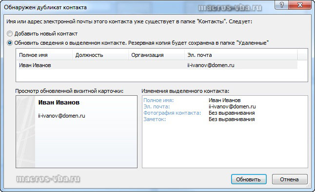

Как удалить дубликаты контактов из Outlook?
Подробности
Категория: Макросы Outlook
Опубликовано: 13 июня 2013
При создании новых контактов в Microsoft Outlook, приложение сравнивает имя и адрес электронной почты нового контакта с именами и адресами существующих контактов, проверяя таким образом не является ли новый контакт дубликатом уже существующего и если является, то выдает диалоговое окно с запросом о дальнейших действиях.
Пользователям предлагается на выбор либо создать новый контакт, либо обновить сведения о существующем.

При выборе опции "Обновить сведения о выделенном контакте" дубликат не создается, а контактная информация обновляется в существующем контакте.
Но что делать, если проверка дубликатов была отключена или дубликаты попали в ваши контакты каким-либо другим способом, например при программном создании контактов из отправителей писем, которые вы получили?
Удаление дубликатов контактов Outlook вручную
Самый простой способ - удаление, что называется, вручную. Для этого всего-то нужно зайти в меню "Переход", выбрать пункт меню "Контакты", выбрать наиболее удобное для вас текущее представление и, используя клавишу Ctrl, пометить повторяющиеся контакты, после чего удалить их все разом, выбрав пункт "Удалить" из контекстного меню (правая кнопка мыши). Способ простой, но медленный и требует внимания.
Удаление дубликатов контактов Outlook сторонними программами
Установка дополнительных программ или надстроек для Outlook позволяет решать проблему удаления дубликатов автоматически. Пример такой надстройки для Outlook можно скачать по ссылке http://www.outlookfreeware.com/ru/products/all/OutlookContactsRemoveDuplicates
Перед установкой надстройки потребуется установка среды разработки, но после инсталляции всего необходимого это дополнение к Outlook со своей задачей справляется успешно.
Макрос для Outlook, удаляющий дубликаты контактов
Почтовое приложение Microsoft Outlook отличается тем, что имеет встроенный редактор Visual Basic for Application и позволяет значительно расширять возможности приложения, не прибегая к установке дополнительного программного обеспечения. Ниже приведен пример макроса, удаляющего дубликаты контактов в Microsoft Outlook. Дубликатами здесь считаются контакты с одинаковыми адресами электронной почты. Если адресная книга сотового телефона синхронизирована с приложением Outlook, то можно внести изменения в программный код макроса так, чтобы дубликатами считались контакты с одинаковыми домашними телефонами (заменить все Email1Address на HomeTelephoneNumber). Также можно установить ряд параметров, например полное имя, адрес электронной почты и название организации по которым макрос будет искать совпадения в контактах.
Option Explicit
Sub Udalenie_dublikatov_Email()
Dim myOutlook As New Outlook.Application
Dim myNamespace As NameSpace
Dim myFolder As MAPIFolder
Dim myWorkFolder As MAPIFolder
Dim iCount As Single, i As Single, j As Single, k As Single
Dim Str1 As String
Dim Str2 As String
Set myNamespace = myOutlook.GetNamespace("MAPI")
Set myFolder = myNamespace.GetDefaultFolder(olFolderContacts)
'Set myWorkFolder = myFolder.Folders("ИмяПапки")
'в случае, если нужна папка внутри дефолтной
Set myWorkFolder = myFolder
'в случае, если используется папка "Контакты"
k = 1
Start:
iCount = myWorkFolder.Items.Count
For i = k To iCount
Str1 = myWorkFolder.Items.Item(i).Email1Address
If Str1 <> "" Then
For j = i To iCount
On Error Resume Next
Str2 = myWorkFolder.Items.Item(j).Email1Address
If Err.Number <> 0 Then
k = i
GoTo Start
End If
If i <> j And Str1 = Str2 Then myWorkFolder.Items.Item(j).Delete
Next j
End If
Next i
Set myOutlook = Nothing
End Sub
Для того, чтобы перенести этот программный код на свой компьютер, наведите курсор мыши на поле с программным кодом, нажмите на одну из двух кнопкок  в правом верхнем углу этого поля, скопируйте программный код и вставьте его в модуль проекта на своем компьютере (подробнее о том, как сохранить программный код макроса).
в правом верхнем углу этого поля, скопируйте программный код и вставьте его в модуль проекта на своем компьютере (подробнее о том, как сохранить программный код макроса).
Другие материалы по теме: